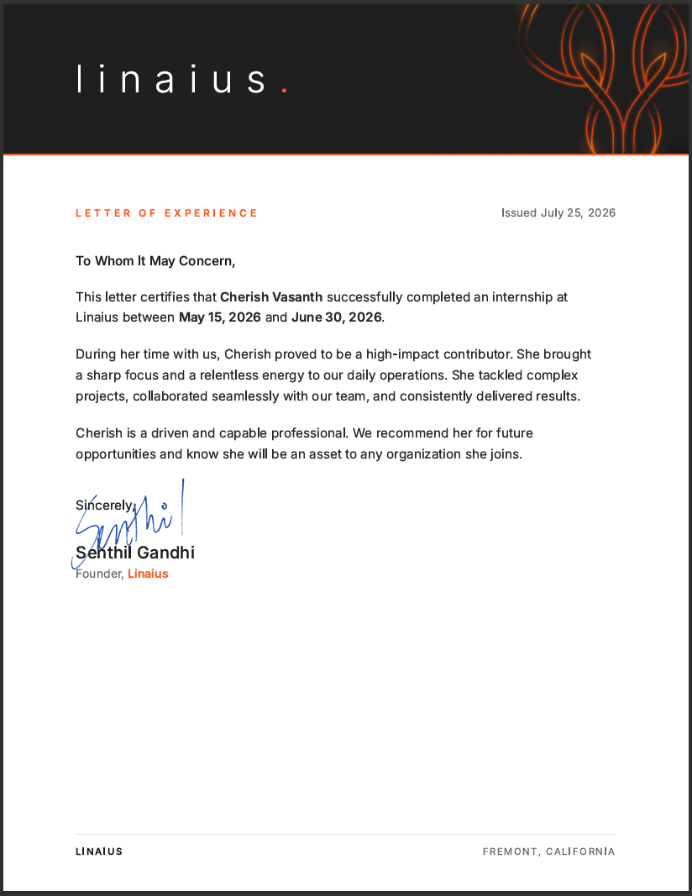
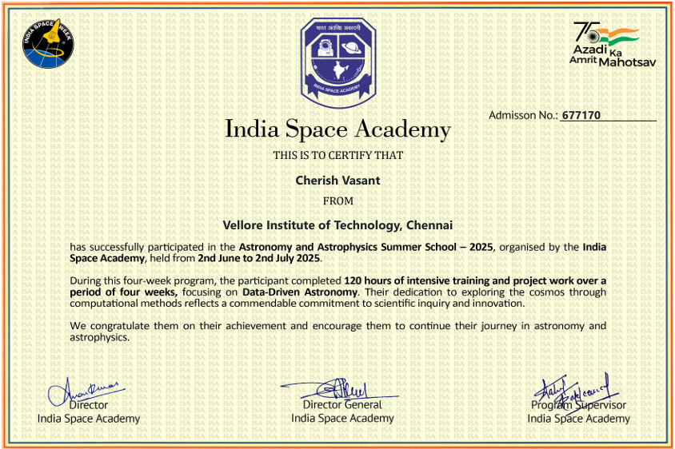
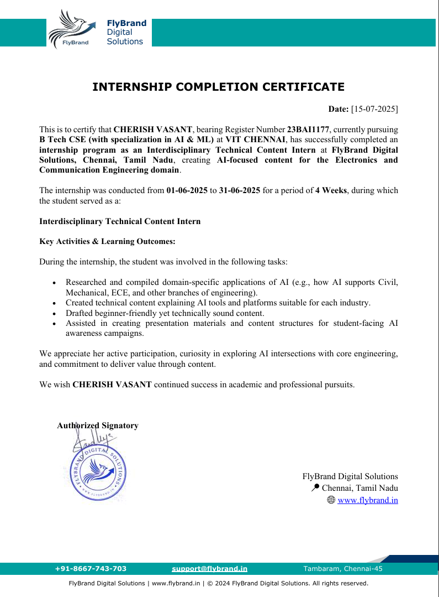

About Me
Cherish turns research curiosity into real, working systems.

- I'm a final-year CSE student, interested in AI, ML, Deep Learning, NLP, Generative AI, and Agentic AI systems.
- I enjoy understanding how these models work and how they can be used to solve real-world problems.
- I love problem solving, and I learn best by building projects and experimenting with ideas.
- I'm always trying to go deeper, improve my skills, and turn what I learn into something practical.
Technical Skills
Skills organized like a codebase — every folder its own discipline.
$ ls skills/
languages/ mldl-libraries/ ai/ databases/ web-dev/ tools/
$ ls languages/
$ ls mldl-libraries/
$ ls ai/
$ ls databases/
$ ls web-dev/
$ ls tools/
Projects
One spectrum, many disciplines — from a first ML model to a working agentic system.
TrebleAI | AI-Powered Music Platform
Designed and developed TrebleAI, an AI-powered self-learning music platform that enables users to independently learn and practice sheet music through intelligent automation, reducing reliance on instructors and tutorial videos.
Cloud Security for IoT Health Systems
Developed a multi-class intrusion detection system using the Edge-IIoTset dataset to classify normal traffic and 14 cyberattack categories. Benchmarked 8 classifiers, including XGBoost, CatBoost, and a Stacking ensemble, to select the best model.
Atrial Fibrillation ECG Detection
Developed a hierarchical deep learning pipeline using the PhysioNet/CinC 2017 Challenge dataset to classify signals into Normal, Atrial Fibrillation, Other Arrhythmias, and Noisy classes despite class imbalance.
Chronic Kidney Disease Prediction
Developed a machine learning pipeline for early CKD prediction using the UCI CKD dataset, applying MICE imputation, clinical range engineering, model risk selection, and a Flask deployment framework.
Age of the Universe Estimation
Measured the Hubble constant and matter density parameter by fitting a flat ΛCDM cosmological model to Type Ia supernova distance moduli from the Pantheon+SH0ES sample, then derived the age of the universe via numerical integration.
Northbound AI | Placement Preparation Tracker
A unified, high-performance web dashboard that centralizes coding preparation (DSA tracker), theoretical computer science notes, job application pipelines, and mock HR interview answers, supported by an interactive AI Copilot.
Toda Language ASR & Translation
Automatic speech recognition and translation system for the endangered, low-resource Toda language, built on pretrained models — the approach generalizes to other low-resource languages. Patent application filed.
My Journey
Learning by shipping, one internship at a time.
Internships
AI Intern
Linaius
May 2026 – June 2026
Remote
• Learned how RAG systems work, BM25-based retrieval and benchmark-driven evaluation practices, alongside NLP text-segmentation techniques like TextTiling for large-scale language pipelines.
• Designed prompting strategies (task decomposition, two-stage extraction, neutral framing) and made programmatic LLM calls through AWS Bedrock, with cost tracking and performance optimizations like caching, streaming, and concurrency.

View CertificateResearch Intern
Indian Space Academy (ISA)
June 2025 – July 2025
Remote
• Developed the Age of the Universe Estimation project using the Pantheon+SH0ES Type Ia Supernova dataset to estimate the Hubble parameter and compute the age of the universe through cosmological data analysis and numerical methods.
• Worked extensively with astronomical datasets, FITS files, data cubes, and the Astropy ecosystem for scientific data processing, visualization, and analysis in Python.

View CertificateAI Content Intern
FlyBrand Digital Solutions
May 2025 – June 2025
Remote
• Explored AI model development workflows using Google Teachable Machine and Roboflow by creating image, audio, and computer vision models for posture recognition, voice-command classification, and PCB defect detection.
• Produced technical training demonstrations documenting model creation, dataset preparation, training, evaluation, and deployment workflows for educational AI content.

View CertificateEducation
B.Tech in Computer Science and Engineering (spec. AI & ML)
Vellore Institute of Technology
Aug 2023 – May 2027
CGPA: 9.24 / 10.0
Grade 12 – ISC, Science with Computer Science
Sishya OMR
2021 – 2023
Percentage: 96%
Grade 10 – CISCE
St. Patrick's High School
2019 – 2021
Percentage: 95.8%
Research & Publications
A patent filed for a low-resource language.
Automatic Speech Recognition and Translation System for the Toda Language leveraging Pretrained Models
Courses & Hackathons
Learning stacked in public — languages, the fundamentals, and one hackathon.


Let's Connect
Feel free to reach out via email or social media.